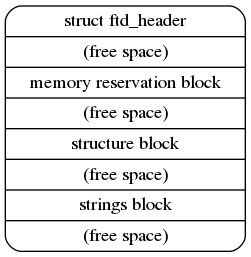

Lab 2: Booting#
Introduction#
Booting is the process to set up the environment to run various user programs after a computer reset. It includes a kernel loaded by bootloader, subsystems initialization, device-driver matching, and loading the init user program to bring up the remaining services in userspace.
In Lab 2, you’ll learn one of the methods to load your kernel and user programs. Also, you’ll learn how to match a device to a driver on rpi3. The initialization of the remaining subsystems will be introduced at later labs.
Goals of this lab#
Implement a bootloader that loads kernel images through UART.
Implement a simple allocator.
Understand what’s initial ramdisk.
Understand what’s devicetree.
Background#
How a Kernel is Loaded on Rpi3#
There are 4 steps before your kernel starts its execution.
GPU executes the first stage bootloader from ROM on the SoC.
The first stage bootloader recognizes the FAT16/32 file system and loads the second stage bootloader bootcode.bin from SD card to L2 cache.
bootcode.bin initializes SDRAM and loads start.elf
start.elf reads the configuration to load a kernel and other data to memory then wakes up CPUs to start execution.
The kernel loaded at step 4 can also be another bootloader with more powerful functionalities such as network booting, or ELF loading.
In Lab 2, you’ll implement a bootloader that loads the actual kernel through UART, and it’s loaded by the previous stage bootloader.
Basic Exercises#
Basic Exercise 1 - Reboot - 10%#
Rpi3 doesn’t originally provide an on board reset button.
You can follow this example code to reset your rpi3.
Important
This snippet of code only works on real rpi3, not on QEMU.
#define PM_PASSWORD 0x5a000000
#define PM_RSTC 0x3F10001c
#define PM_WDOG 0x3F100024
void set(long addr, unsigned int value) {
volatile unsigned int* point = (unsigned int*)addr;
*point = value;
}
void reset(int tick) { // reboot after watchdog timer expire
set(PM_RSTC, PM_PASSWORD | 0x20); // full reset
set(PM_WDOG, PM_PASSWORD | tick); // number of watchdog tick
}
void cancel_reset() {
set(PM_RSTC, PM_PASSWORD | 0); // full reset
set(PM_WDOG, PM_PASSWORD | 0); // number of watchdog tick
}
Todo
Add a <reboot> command.
Basic Exercise 2 - UART Bootloader - 30%#
In Lab 1, you might experience the process of moving the SD card between your host and rpi3 very often during debugging. You can eliminate this by introducing another bootloader to load the kernel under debugging.
To send binary through UART, you should devise a protocol to read raw data. It rarely drops data during transmission, so you can keep the protocol simple. Here is a simple example of what a protocol might look like.
header = struct.pack('<III',
0x544F4F42, # "BOOT" in hex
len(kernel_data), # size
checksum # checksum
)
You can effectively write data from the host to the Raspberry Pi 3 through the serial device’s device file in Linux by creating a Python script to communicate with the bootloader.
with open('/dev/ttyUSB0', "wb", buffering = 0) as tty:
tty.write(...)
Hint
After compiling bootloader.img, we can first use QEMU to test its functionality before running it on actual hardware.
You can use qemu-system-aarch64 -machine raspi3b -kernel your_bootloader.img -serial null -serial pty to create a pseudo TTY device and test your bootloader through it.
Config Kernel Loading Setting#
You may still want to load your actual kernel image at 0x80000, but it then overlaps with your bootloader.
You can first specify the start address to another by re-writing the linker script.
Then, add config.txt file to your SD card’s boot partition to specify the loading address by kernel_address=. (By default, if no address is specified in config.txt, the image will be loaded at 0x80000.)
To further make your bootloader less ambiguous with the actual kernel, you can add the loading image name by
kernel= and arm_64bit=1
kernel_address=0x60000
kernel=bootloader.img
arm_64bit=1
Todo
Implement a UART bootloader that loads kernel images through UART.
Important
UART is a low-speed interface. It’s okay to send your kernel image because it’s quite small. Don’t use it to send large binary files.
Basic Exercise 3 - Initial Ramdisk - 30%#
After a kernel is initialized, it mounts a root filesystem and runs an init user program. The init program can be a script or executable binary to bring up other services or load other drivers later on.
However, you haven’t implemented any filesystem and storage driver code yet, so you can’t load anything from the SD card using your kernel. Another approach is loading user programs through the initial ramdisk.
An initial ramdisk is a file loaded by a bootloader or embedded in a kernel. It’s usually an archive that can be extracted to build a root filesystem.
New ASCII Format Cpio Archive#
Cpio is a very simple archive format to pack directories and files. Each directory and file is recorded as a header followed by its pathname and content.
In Lab 2, you are going to use the New ASCII Format Cpio format to create a cpio archive.
You can first create a rootfs directory and put all files you need inside it.
Then, use the following commands to archive it.
cd rootfs
find . | cpio -o -H newc > ../initramfs.cpio
cd ..
Freebsd’s man page has a detailed definition of how New ASCII Format Cpio Archive is structured. You should read it and implement a parser to read files in the archive. The New ASCII Format has its header format defined as follows:
struct cpio_newc_header {
char c_magic[6];
char c_ino[8];
char c_mode[8];
char c_uid[8];
char c_gid[8];
char c_nlink[8];
char c_mtime[8];
char c_filesize[8];
char c_devmajor[8];
char c_devminor[8];
char c_rdevmajor[8];
char c_rdevminor[8];
char c_namesize[8];
char c_check[8];
};
Please note that a NUL byte is appended to the pathname to ensure that the combined size of the fixed header and the pathname is a multiple of 4. Similarly, file data is also padded to align with a 4-byte boundary.
Loading Cpio Archive#
QEMU
Add the argument -initrd <cpio archive> to QEMU.
QEMU loads the cpio archive file to 0x8000000 by default.
Rpi3
Move the cpio archive into SD card.
Then specify the name and loading address in config.txt.
initramfs initramfs.cpio 0x20000000
Todo
Parse New ASCII Format Cpio archive, and read file’s content given file’s pathname.

Important
In Lab 2, you only need to put some plain text files inside your archive to test the functionality. In the later labs, you will also put script files and executables inside to automate the testing.
Basic Exercise 4 - Simple Allocator - 10%#
Kernel needs an allocator in the progress of subsystem initialization. However, the dynamic allocator is also a subsystem that need to be initialized. So we need a simple allocator in the early stage of booting.
Todo
Implement a alloc function that returns a pointer points to a continuous space for requested size.
Hint
Your allocator don’t need to support free function.
The folloing code is a breif example:
void* simple_malloc(size_t size) {
...
}
int main() {
char* string = simple_alloc(8);
}
In this simple allocator, the heap is a pre-allocated memory pool used for dynamic memory requests. We can request memory dynamically from the pool by passing a size argument. The allocator works by linearly allocating memory and ensuring that the requested allocation does not exceed the available space in the heap, and the function returns a pointer to the allocated memory.
Advanced Exercises#
Advanced Exercise 1 - Bootloader Self Relocation - 10%#
In the basic part, you are allowed to specify the loading address of your bootloader in config.txt.
However, not all previous stage bootloaders can specify the loading address.
Hence, a bootloader should be able to relocate itself to another address, so it can load a kernel to an address overlapping with its loading address.
Todo
Add self-relocation to your UART bootloader, so you don’t need kernel_address= option in config.txt. Please ensure the bootloader’s initial loading address overlaps with the kernel image’s loading address, then relocate the bootloader to a different memory address.
Hint
You may implement the relocation through assembly.
Advanced Exercise 2 - Devicetree - 30%#
During the booting process, a kernel should know what devices are currently connected and use the corresponding driver to initialize and access it. For powerful buses such as PCIe and USB, the kernel can detect what devices are connected by querying the bus’s registers. Then, it matches the device’s name with all drivers and uses the compatible driver to initialize and access the device.
However, for a computer system with a simple bus, a kernel can’t detect what devices are connected. One approach to drive these devices is as you did in Lab 1; developers know what’s the target machine to be run on and hard code the io memory address in their kernel. It turns out the driver code becomes not portable.
A cleaner approach is a file describing what devices are on a computer system. Also, it records the properties and relationships between each device. Then, a kernel can query this file as querying like powerful bus systems to load the correct driver. The file is called deivcetree.
Format#
Devicetree has two formats devicetree source(dts) and flattened devicetree(dtb). Devicetree source describes device tree in human-readable form. It’s then compiled into flattened devicetree so the parsing can be simpler and faster in slow embedded systems.
You can read rpi3’s dts from raspberry pi’s linux repository.
You can get rpi3’s dtb by either compiling it manually or downloading the off-the-shelf one.
Parsing#
In this advanced part, you should implement a parser to parse the flattened devicetree. Besides, your kernel should provide an interface that takes a callback function argument. So a driver code can walk the entire devicetree to query each device node and match itself by checking the node’s name and properties.
You can get the latest specification from the devicetree’s official website. Please refer to Chapters 5, 2, and 3 in that order for more implementation details on building your parser.
The structure of the Devicetree .dtb file is illustrated below (Fig. 5.1):
The structure is further divided into the FTD header, memory reservation block, structure block, and strings block. Here, we primarily utilize the structure block and strings block to obtain device information, which can be accessed through the header.
The Flattened Devicetree Header Fields are as follows (5.2. Header.):
struct fdt_header {
uint32_t magic;
uint32_t totalsize;
uint32_t off_dt_struct;
uint32_t off_dt_strings;
uint32_t off_mem_rsvmap;
uint32_t version;
uint32_t last_comp_version;
uint32_t boot_cpuid_phys;
uint32_t size_dt_strings;
uint32_t size_dt_struct;
};
Please note that all the header fields are 32-bit integers, stored in big-endian format.
The stucture block can be further devided into several tokens, each containing its specific data. Below is a simple example of the layout with token descriptions. For more implementation details, please refer to (5.4. Structure Block.)
/ {
soc { // FDT_BEGIN_NODE "soc"
compatible = "simple-bus"; // FDT_PROP
interrupt-parent = <&intc>; // FDT_PROP
intc: interrupt-controller@f8f01000 { // FDT_BEGIN_NODE "interrupt-controller@f8f01000"
compatible = "arm,cortex-a9-gic"; // FDT_PROP
reg = <0xF8F01000 0x1000>, // FDT_PROP
<0xF8F00100 0x100>;
}; // FDT_END_NODE
}; // FDT_END_NODE
}; // FDT_END
Todo
Implement a parser that can iterate the device tree. Also, provide an API that takes a callback function, so the driver code can access the content of the device node during device tree iteration.
The folloing code is a breif example of the API. You can design it in your own way.
void initramfs_callback(...) {
...
}
int main() {
fdt_traverse(initramfs_callback);
}
Todo
Use the API to get the address of initramfs instead of hardcoding it. The initramfs address is located in the /chosen/linux,initrd-start node.
Dtb Loading#
A bootloader loads a dtb into memory and passes the loading address specified at register x0 to the kernel.
Besides, it modifies the original dtb content to match the actual machine setting.
For example, it adds the initial ramdisk’s loading address in dtb if you ask the bootloader to load an initial ramdisk.
QEMU
Add the argument -dtb bcm2710-rpi-3-b-plus.dtb to QEMU.
Rpi3
Move bcm2710-rpi-3-b-plus.dtb into SD card.
Todo
Modify your bootloader for passing the device tree loading address.
Hint
You may use assembly to store and retrieve the x0 register for the initramfs address.